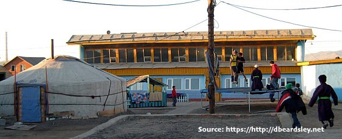

//Lotus Guest House
This guesthouse is different from others because it is owned by the Lotus Children’s Centre. The main purpose of this initiative is to give teenagers professional experience in tourism and hospitality and help them build an independent lifestyle after leaving the orphanage.
//Chuka's Guest House
Another attractive centrally located establishment. It is family owned and the service is decent quality considering the cost. Highly recommended!